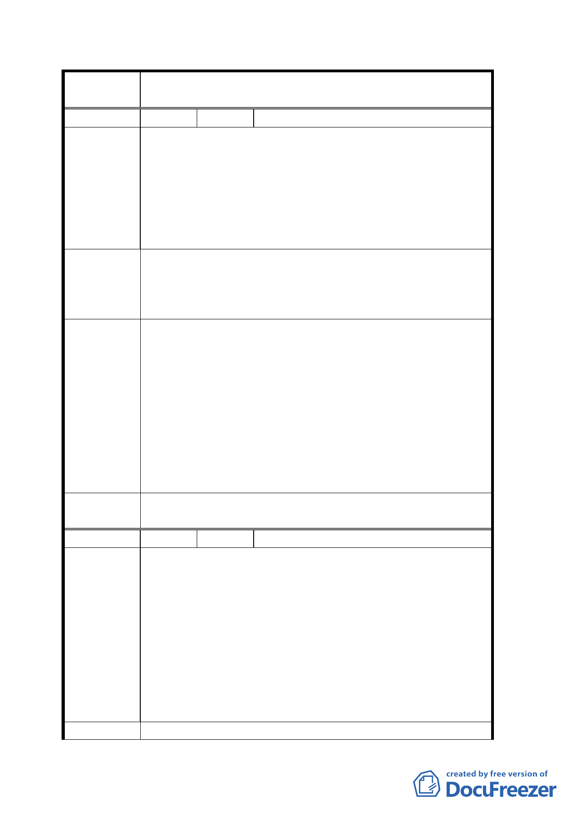

案
名
變更「修訂台北市主要計畫商業區（通盤檢討）計
畫案」內有關商業區變更回饋相關規定案
編 號 ３ 陳情人 李秀雲
建議位置：
信義區虎林段四小段 4、5、6 地號。
信義區松隆路 294 號。
陳 情 理 由 建議理由：
本地段位於松山車站服裝商業圈，全省服裝批發集散地，
來往人潮每日聚增，原規劃住宅已改為服裝批發買賣，急
需導正為商業區。
一、獎勵都市更新，以提高容積率來鼓勵住戶改建商業大
建議辦法
樓。
二、應調降放寬容積率之回饋金，其回饋金應延到土地過
戶時連同增值稅一併課徵。
一、 有關都市更新部分，可依都市更新條例及「臺北市都
市更新自治條例」規定申請辦理。
二、 本次計畫即檢討變更回饋金之調降，請參酌計畫內容
辦理，至於回饋金是否可延到土地過戶時連同增值稅
專案小組
一併課徵乙項建議，非屬本會審議權責，移請執行單
審查結論
位參考。
三、 本案係針對 84 年商業區檢討案內所劃設商業區回饋
條件之檢討，而非分區之變更，因此有關松山車站服
裝批發區變更為商業區建議，本陳情案已於 93.11.1
第一次專案小組審查會議時移請市府參考。
委員會議
決議
依專案小組審查結論辦理。
編 號 4 陳情人 吳進明
建議位置：
士林區光華段一小段。
士林區中正路 187 巷。
建議理由：
陳情理由
本計畫將社區參與簡化及回饋降低，那誰能為居民防範環
境因此惡化？尤其煤氣、瓦斯、爆竹煙火、歌廳、夜總會、
餐飲業、機車修理、殮葬業都是破壞居住品質的行業，在
導正商業健全發展之時，可考慮過原屬住宅區居民的居住
權益？我們都是在台北置產居住的小市民，請不要為了商
家犧牲居民。
建 議 辦 法 （空白）
一二